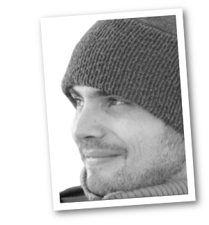

I deal with users, providing them fitting UX solutions,
improving their web Experience.
My favourite triad is of course HTML, CSS and Javascript, starting point for further libraries and tools.
Linux (and *nix) is my ideal habitat, command line is discipline and clean separation between code and output.
Vim and git enthusiast.
- Experience
-
GRIN Verlag GmbH Front-end Dev, UX Design - Munich, 2012-now
- Grin Solutions website: UX design, front-end coding, Responsive Design implementation
- Grin Solutions project maintainance, front-end development, bugfixing
- GRIN website front-end coding, bugfixing and maintainance
- Usability testing sessions with real users on internal projects
- Internal collaboration with bilandia GmbH: Grin Solutions customers' projects maintainance, social-media marketing products development (facebook tabs and games)
- Cross-browser and cross-device testing and debugging
Promuovitalia S.p.A. Front-end Dev, Drupal themes coder - Rome, 2010-2012
- PSD slicing and coding for native CMS themes
- Drupal Intranet portals
- Cross-browser and cross-device testing and debugging
- Accessibility validation
ITJ Consulting SRLFrontend developer - Rome, 2008-2010
- PSD slicing and coding for native CMS themes
- Joomla Portals
- Cross-browser and cross-device testing and debugging
- Accessibility validation
Università Telematica Guglielmo Marconi Frontend developer - Rome 2006-2008
- Actionscript development for online tests and exams with SCORM tracing
- Front-end development for intranet and internet portals
- Usability and accessibility testing and validation
Agenzia Romana SRL Frontend developer - Rome 2005-2006
- front-end development on various projects
- Wireframing
- Usability testing
- Education
-
Istituto Europeo di Design (IED), Rome - 2005
Master (Advanced Study Program): Web Design & Strategy
Final project: www.sabinamater.it (offline now, viewable on web.archive.org)
University of Rome "La Sapienza" - 2004
Degree: Sociology
Specialization: Communication and Mass Media
- Skills
-
Front-end development
- Fluent HTML5
- Fluent CSS3/Responsive Design
- Good Javascript/jQuery
- Efficient mastery on cross browser/device issues
UX
- use case analisys
- usability testing
- wireframing and prototyping
Validation
Languages
- Italian - native
- English - fluent
- German - basic (currently A2.1)
- Main Tools
-
Development
- Agile (SCRUM)
- Vim and Sublime Text
- linux/unix command line
- git
UX
- Axure (wireframing and prototyping tool)
- XMind (mind-mapping tool)
- Hobbies
- Raspberry Pi, retrocomputing, Lomography, amateur musician, cuisine